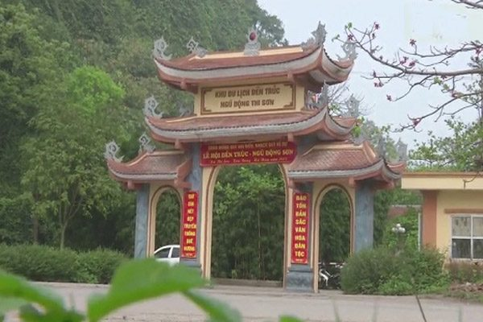
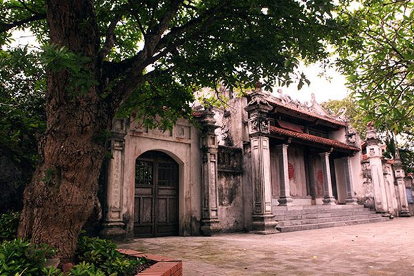
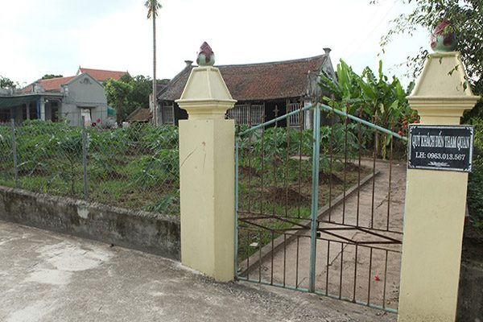

Hà Nam là vùng đất cửa ngõ phía nam của thủ đô Hà Nội, với khí hậu mát mẻ, thiên nhiên ưu ái nhiều cảnh đẹp, là tiền đề cho ngành du lịch Hà Nam phát triển. Nhiều du khách muốn đến Hà Nam ít nhất một lần để thăm quan di tích lịch sử, danh lam thắng cảnh nguyên sơ, nổi tiếng. Hãy cùng Du Lịch Việt điểm qua những điểm thăm quan hấp dẫn nhất của Hà Nam này nhé.
I. Giới Thiệu Về Tỉnh Hà Nam
Vị Trí Hà Nam
Nằm trên cây cầu nối các vùng kinh tế trọng điểm ở miền Bắc với đồng bằng ở phía nam sông Hồng, Hà Nam có đóng góp đáng kể cho sự phát triển của Việt Nam trong mọi lĩnh vực từ kinh tế đến xã hội.
Hà Nam là một tỉnh thuộc đồng bằng sông Hồng Việt Nam, giáp với Hà Nội ở phía bắc, Hưng Yên và Thái Bình ở phía đông Ninh Bình ở phía nam, Nam Định ở phía đông nam và Hòa Bình ở phía tây.
Địa Lý Hà Nam.
Hà Nam là một tỉnh đồng bằng giáp núi, nên địa hình Hà Nam có sự đối lập giữa đồng bằng và núi. Mật độ và độ sâu của địa hình bị chia cắt so với khu vực miền núi trong cả nước gần như không đáng kể. Hướng địa hình duy nhất là tây bắc – đông nam, phù hợp với hướng phổ biến nhất của núi và sông ở Việt Nam. Độ dốc của địa hình cũng là Tây Bắc – Đông Nam dọc theo thung lũng sông Hồng, sông Ngày và núi đá vôi Hòa Bình – Ninh Bình, thể hiện bản chất đơn giản của cấu trúc địa chất.
Khí hậu Hà Nam
có khí hậu nhiệt đới gió mùa. Nhiệt độ trung bình hàng năm khoảng 23 – 24 ° C, số giờ nắng trung bình là khoảng 1300-1500 giờ / năm. Trong năm, 8 đến 9 tháng có nhiệt độ trung bình trên 20 ° C (bao gồm 5 tháng với nhiệt độ trung bình trên 25 ° C) và chỉ có 3 tháng có nhiệt độ trung bình dưới 20 ° C, nhưng không có tháng nào có nhiệt độ dưới 16 ° C. Lượng mưa trung bình khoảng 1900mm. Độ ẩm trung bình khoảng 85%. Tháng 3 là tháng có độ ẩm trung bình cao nhất (95,5%) và tháng 11 là tháng có độ ẩm trung bình thấp nhất trong năm (82,5%).
II. Thời Điểm Du Lịch Hà Nam phù Hợp.
Việc gần thủ đô Hà Nội, có thời tiết tương tự thủ đô nên du khách có thể đến đây bất kỳ thời điểm nào trong năm. Nếu bạn đến đây để du hí có thể ghé vào mùa thu từ tháng 8 – tháng 10. Bên cạnh đó, bạn vẫn có thể đi vào các mùa khác nếu thích.
Bạn là một người thích sôi động có thể ghé Hà Nam vào tháng giêng hoặc tháng 3, thời điểm này diễn ra nhiều lễ hội như hội làng Duy Hải, hội làng Gừa, hội Dương Hò. Đây là được xem là mùa náo nhiệt nhất ở Hà Nam.
Phương Tiện Du Lịch Hà Nam ?
Bạn là người thích đi tự túc, khám phá tự do có thể đến đây bằng xe máy. Vì Hà Nam cách Hà Nội khá gần chỉ tầm 60km nên có thể dễ dàng đi đến. Khá thú vị khi việc vừa di chuyển vừa ngắm cảnh, tự do trong hành trình.
Với hành trình này sẽ cho bạn cảm giác vui vẻ. Từ trung tâm Hà Nội, chỉ cần dọc theo quốc lộ 1A về phía Nam có thể đến được trung tâm tp Phủ Lý, trong quãng thời gian là 1 giờ. Khi đi bạn nhớ chuẩn bị đầy đủ hành trang như giấy tờ tuỳ thân, bằng lái xe, kính bảo hộ,…. nhé.
III. Địa Điểm Dừng Chân – Khách Sạn Hà Nam.
Hiện tại Hà Nam có nhiều khách sạn, nhà nghỉ chất ượng với giá phục vụ bình dân từ 200k đến 250k phòng đơn. Khách sạn 3 sao trở lên thì giá 800k đến 1.200k/ngày
Khi đến tp Phủ Lý, bạn có thể chọn lựa khách sạn, nhà nghỉ trên các con đường chính như Lý Thường Kiệt, Lê Hoàn, Đinh Tiên Hoàng,… tuỳ thuộc vào hành trình để thuận tiện cho việc đi lại.
Dưới đây là một số khách sạn tốt mà bạn có thể dừng chân tại Hà Nam.
Khách sạn INCO 5159.
Địa chỉ: đường Lê Hoàn, tp Phủ Lý, Hà Nam.
Toạ lạc tại trung tâm nên thuận tiện việc đi lại đến các điểm du lịch Hà Nam. Khách sạn này tiêu chuẩn 3 sao, có giá trung bình 800k/ đêm cho phòng đôi.
Mường Thanh Luxury Hà Nam.
Địa chỉ: Ngã tư đèn giao thông, khu vực cầu Hồng Phú, p Quang Trung, tp Phủ Lý.
Là một khách sạn sang trọng nhất ở Hà Nam, có đầy đủ mọi tiện nghi như: hồ bơi, nhà hàng, quán bar, khu nghỉ dưỡng có giá 1.200k/đêm.
Khách sạn Hải Đăng:
Địa chỉ: 124, Lê Lợi, phường Lương Khánh Thiện, tp Phủ Lý.
Toạ lạc tại trung tâm thương mại Hải Đăng, khách sạn tiêu chuẩn 2 sao, bạn sẽ được tận hưởng cảm giác tuyệt vời trong một khuôn viên sang trọng tại trung tâm, với giá thành tốt nhất.
IV. Địa Điểm Du Lịch Hà Nam Không Thể Bỏ Qua.
Sau khi đã có nơi ăn, chốn dừng chân, sáng ngày hôm sau, bạn có thể hành trình khám phá những địa điểm du lịch Hà Nam lý Tưởng. Dưới đây là những địa điểm thăm quan Hà Nam được nhiều du khách yêu thích nhất.
1. Đền Trúc – Ngũ Đông Sơn.

Tọa lạc tại làng Quyển Sơn, xã Thi Sơn, huyện Kim Bàng, cách huyện Phú Lý khoảng 7km dọc theo Quốc lộ 21A. Truyền thuyết kể rằng sau khi đánh bại quân xâm lược, quân Lý Thượng Kiệt và quân chiến thắng đã dừng lại ở đây để tưởn nhớ những dũng sỹ đã hy sinh và ăn mừng chiến thắng.
Sau đó, để tưởng nhớ ông, người dân địa phương đã lập chùa dưới chân núi Cam và gọi là đền Trúc. Trên núi, có Ngũ Đông Sơn – 5 hang đá nối liền nhau thành một dãy liên tục với độ sâu hơn 100m. Chùa Long Đời được xây dựng dưới triều đại của vua Lê Thánh Tông. Nó nằm ở núi Doi với độ cao 79m so với mực nước biển, thuộc xã Doi Sơn, huyện Duy Tiến, cách Hà Nội khoảng 50km về phía nam.
Toàn cảnh núi Doi trông giống như một con rồng khổng lồ nằm ở vùng đồng bằng thấp. Mặc dù được xây dựng từ giữa thế kỷ mười một, nhưng nó thực sự được phát triển và xây dựng với quy mô lớn vào năm 1118 dưới triều đại của vua Lý Nhân Tông.
2. Khu du lịch Tam Chúc – Bà Sao.
Nằm cách phía tây thành phố Phú Lý khoảng 15km, trên quốc lộ 21, tiếp giáp với các khu du lịch lớn của cả nước như chùa Hương (Hà Nội), Bái Dinh, Cúc Phương (Ninh Bình) và Chùa Tiên (Hòa Bình).
Khu vực này bao gồm các cảnh quan liên kết với hồ Tam Chư và chùa Bà Sao ở thị trấn Ba Sao và xã Kha Phong, huyện Kim Bàng, Hà Nam. Đây là ngọn núi đá vôi xung quanh là đầm lầy với nhiều di tích lịch sử văn hóa như Hang Vọng, Hang Cô Nhới, Chùa Thiên Phúc, Chùa Bà Danh, Chùa Lý Thượng Kiệt, Chùa Thị, Hang Thủy, Hang Lim, Hang De Yem, Hang Chua, Lê Chân Chùa, Chùa Ông, Chùa Tam Giao, Chùa Kiều và Chùa Vạn Mộng.
3. Chùa Bà Đanh – núi Ngọc

Chùa toạ lạc tại thông Đanh Xá, xã Ngọc Sơn, huyện Kim Bảng. Chùa còn có tên gọi khác là Bảo Sơn Tự thờ bà chúa Đanh. Ngôi chùa này được nhiều du khách viếng thăm vì linh thiên, cùng với thắng cảnh đẹp cuốn hút, nằm cách tp Phủ Lý 10km, nhìn thẳng ra dòng sông Đáy, được ưu ái với cảnh thiên nhiên thơ mộng, hữu tình.
Từ ngàn xưa, chùa Bà Đanh đã hình thành với truyền kỳ liêu trai, sự tích nói về sự vắng vẻ huyền bí của địa danh này, tâm điểm là tượng Bà Đanh. Khi đến thăm quan, cúng bái tại chùa, du khách sẽ biết thêm được nhiều câu chuyện thú vị được các sư thầy kể lại về nguồn gốc của chùa.
Sau khi thăm quan chùa, bạn có thể xuống bến nước, một nơi được lát đá xám trắng bên bờ sông Đáy nên thơ để ngắm cảnh hữu tình, thả hồn vào thiên nhiên trong lành, tránh xa sự ồn ào xô bồ của thành phố
Nếu có quỹ thời gian, bạn hãy đi đến vườn cây trái xum xuê, nơi đây có cây si ngàn năm, toả bóng mát cả một vùng. Tại đây du khách có thể ngắm cảnh núi Ngọc và toàn cảnh sông nước từ trên cao.
Nhiều du khách sẽ có thắc mắc về truyền kỳ sự vắng vẻ của chùa Bà Đanh. Do chùa thiêng hay do vị trí không thuận tiện ? hãy cùng chúng tôi đến thăm quan và tìm đáp án cho câu trả lời này nhé.
4. Nhà Bá Kiến – Nguyên mẫu làng Vũ Đại

Toạ lạc tại xóm 11, làng Đại Hoàng, xã Hòa Hậu, huyện Lý Nhân
Làng này gắn liền với câu chuyện ngắn nổi tiếng của nhà văn Nam Cao là “Chí Phèo” với những nhân vật đã ghi lại dấu ấn một thời của đời học sinh là: Chí Phèo, Thị Nở, bá Kiến. Thực tế, nhà văn Nam Cao đã tả lại nguyên mẫu cảnh quan của ngôi làng Nhân Hậu, xã Hoà Hậu, huyện Lý Nhân, quê hương của ông.
Đến thăm làng, bạn sẽ được ngắm lại dấu vết xưa cũ, một làng quê Việt Nam cuối thế kỷ 18 với âm thanh của tiếng dệt vải, con đường làng rợp bóng mát, mái ngói, hàng gạch vẫn còn đó theo thời gian.
Thăm quan nhà Bá Kiến ở xóm 11 xã Hoà Hậu, du khách sẽ không khỏi ngạc nhiên, sau hơn 100 năm tàn phá của chiến tranh, mưa bom, ngôi nhà 3 gian với gỗ lim chân cột kê đá tảng vẫn đứng vững.
Xung quanh nhà là vườn chuối rợp bóng mát cho du khách gợi nhớ chuyện tình buồn của chí Phèo, Thị Nở với bát cháo hành nồng thấm đậm tình người. Khi đến làng Vũ Đại, du khách sẽ có cơ hội thưởng thức những món ăn đặc sản Hà Nam giản dị, nhưng hấp dẫn như nồi cá kho niêu đất nhân Hậu, bát cơm trắng nóng hổi, nhắc đến cảm thấy thèm, những quả hồng không hạt nhân Hậu căng mịn, đỏ sẩm…
5. Động Phúc Long.
Đây là địa điểm thăm quan nổi tiếng tại Hà Nam, có vị trí trong khu núi Chùa, là ngọn núi trung tâm dãy núi Kiện Khê, bên trên có chùa Hang và khu miếu thờ các vị thần. Theo truyền thuyết trên dãy núi Chùa có rồng quây quần trên đỉnh, có cây tùng cổ thụ, cùng danh lam thắng cảnh đẹp của Hà Nam.
Khi thăm quan Núi Chùa du khách sẽ thấy có có khối đá lớn xếp chồng lên nhau theo trình tự, đầu mỏm đá lởm chởm, hình thù kì dị như chiếc đầu rồng, có những ngọn đá nhọn lên như sừng rồng và ngôi chùa như tâm điểm miệng con rồng. Đường lên núi không quá khó bởi có nhiều thềm đá xếp thành từng bậc rất thích hợp cho việc lên khám phá.
Phía trên đỉnh núi du khách có thể phóng tầm mắt ra xa ngắm vẻ đẹp của núi Bút Sơn, rừng Thanh Thủy, sông Đáy nên thơ trữ tình. Khám phá động Phúc Long trên ngọn núi, ta đi vào trong động gặp một ngã ba, rẽ theo hướng bên phải ta thấy hàng chục hang động với nhiều thạch nhũ lóng lánh, đi sang trái ta gặp đường đầy đá nhô lên cao, muôn hình vạn trạng.
Trong động Phúc Long có rất nhiều loài dơi cư ngụ, hơn nữa động có dáng giống con rồng thắt túi, lòng hang rộng với sức chứa lên tới vài trăm người. Cùng hòa với cảnh quan đình thôn Châu cùng núi Chùa hùng vĩ nơi đây đang là điểm đến hút khách ở Hà Nam.
Ngoài 5 địa danh trên, du khách có thể thăm quan một số địa điểm như: Đền Trần Thương tại thôn Trần Thương, xã Nhân Đạo, huyện Lý Nhân, Kẽm Trống thuộc 2 xã Thanh Hải – Thanh Liêm, Làng nghề dệt lụa tơ tằm Nha Xá tại xã Mộc Nam, huyện Duy Tiên, cùng nhiều điểm du lịch Hà Nam Hấp Dẫn khác.
Đăng bởi: du lịch việt